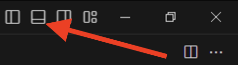
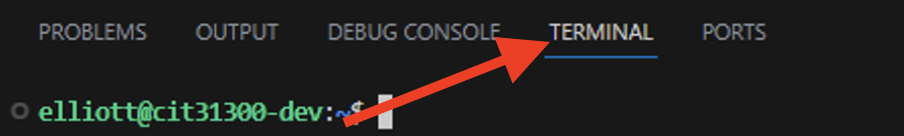
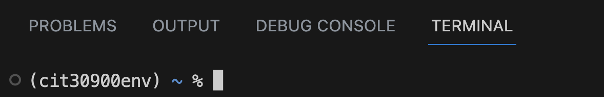

Use MacOS Terminal in Visual Studio Code#
Now that you have VS Code installed, you can use its user interface to create and edit files as well as interact with the MacOS Terminal.
Open a Terminal in Visual Studio Code#
You can split the VS Code view to show both the file editor as well as the MacOS Terminal. To do this, you will open the bottom panel in VS Code and show the Terminal.
From the top right of the menu bar in VS Code, choose the
Toggle Panelicon:
Alternatively, you can press
Ctrl+J
If it is not already selected, choose the “Terminal” tab at the top of the VS Code panel.
You should now see MacOS command prompt in the Terminal within VS Code. Your terminal prompt will be unique to you, but may be as simple as
~ %. This is where you can issue Linux commands to your MacOS Terminal.
Create a Root Directory for this Course#
Create a root directory on your computer that you will use as your “home base” for all of the files you work with in this course.
Note
You will hear me refer to this specific directory as your “root directory” or “local root directory” throughout this course!
By default, your Terminal prompt is at the user’s home directory in MacOS. You can create a new directory at this location or you can create a directory somewhere else on your computer.
You can create your root directory in one of two ways: through the Terminal, or through the Graphical User Interface.
Option 1: Create a Root Directory Using the Terminal#
From the Terminal prompt in VS Code, type
ls. This will show you all of the directories and files stored within your currently active directory.
You likely will see common MacOS directories such as
DesktopandDocumentshere.
Think about the location on your computer where it makes the most sense for you to store your files. Say, for example, that you want to create your root directory inside your Documents directory. We’ll use that as our example.
From the command prompt, navigate into the
Documentsdirectory with the following command:cd DocumentsThen enter the command
mkdir cit30900at the command prompt.Move into the newly-created directory with the command
cd cit30900You should see that your command prompt has changed and now includes the current directory. Your prompt will look something like
Documents/cit30900 %
Option 2: Create a Root Directory Using the Graphical User Interface#
Think about the location on your computer where it makes the most sense for you to store your files. Say, for example, that you want to create your root directory inside your Documents directory. We’ll use that as our example.
Using Finder on your MacOS, open your
Documentsfolder.Create a new folder named
cit30900inside yourDocumentsfolder.Right-click on your newly-created
cit30900folder and choose “New Terminal at Folder”
This will launch a MacOS Terminal window and set the current working directory to your cit30900 directory.
To open this directory in VS Code, do the following:
Type
code .(make sure you include the.) at the command prompt.
This will open VS Code and set the active workspace to your cit30900 directory. It should have also opened the VS Code panel and set the current working directory to your cit30900 directory.
Activate Your Virtual Environment in VS Code#
You need to activate your virtual environment to ensure all of the Python packages you have downloaded will be available to you.
At the Terminal prompt in VS Code use the command to activate the virtual environment you created:
workon cit30900env
You should now see the name of your virtual environment appear prior to the command prompt in your VS Code terminal window.
Create a Test File#
Regardless of the method you chose above, you should be ready to write and store code in VS Code. Create a test file to show the connection between the Terminal and your file editor in VS Code.
Ensure you are in your
cit30900root directory.
When you installed VS Code, it added a special command that you can use to create and open a new file with a single command.
At the command prompt, type
code helloworld.py.
You should see a file open in the file editor at the top of the VS Code window.
Note
If you are asked to trust the authors of any files, you should respond positively.
Enter a simple Python
print()statement into your file:
print('Hello world!')
Save your file using the VS Code
Filemenu, or by pressingCommand+STo see that the file is now saved in your local root directory, type the following at the command prompt:
ls
You should see the file helloworld.py appear. As you add more directories and files, they will be displayed when you “list” (ls) your files.
Run your Python file with the following command in the VS Code terminal:
python helloworld.py
You should see your message output in the Terminal window.